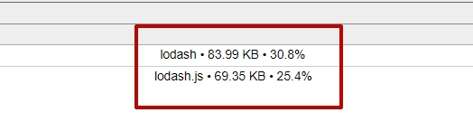

Я создал в in-lib2 компонента. В компонент "in-a1" я ничего не добавил, практически пустой компонент. А в компонент "in-b1" я добавил lodash. Затем я добавил в app.module.ts, который находится в приложении app-c InA1Module. Т.е. логично было бы ожидать, что размер бандла не особо увиличится и библиотека lodash не будет использоваться. Давайте посмотрим что получилось по итогу
Размер бандла увеличился на 90kb. Посмотрим кто в этом виноват.
Для поиска виновного установил source-map-explorer
Виновник lodash, но какого х**. Мы же этот компонент не используем даже в нашем приложении!!! Можно сейчас уменьшить размер lodash, но сейчас не про это